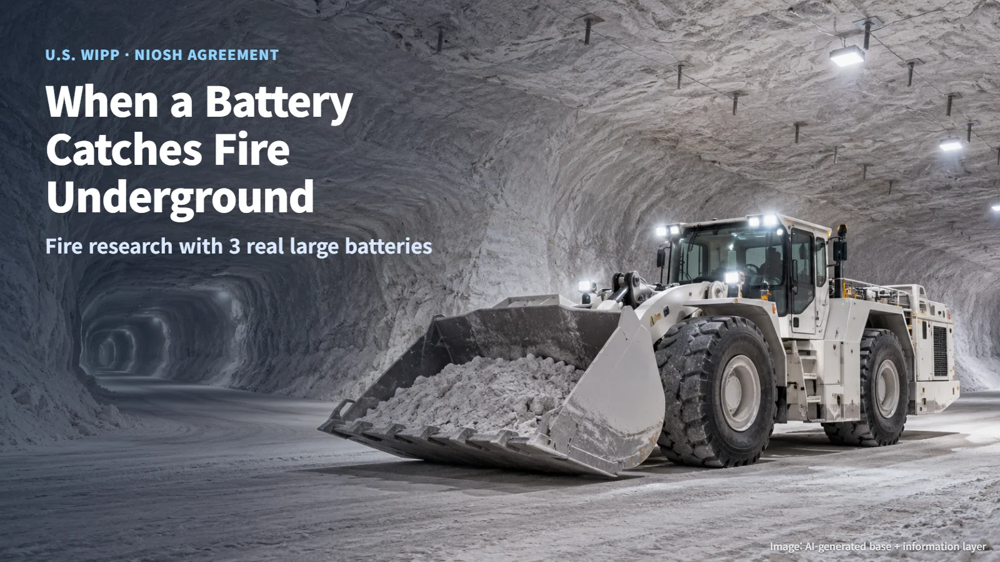
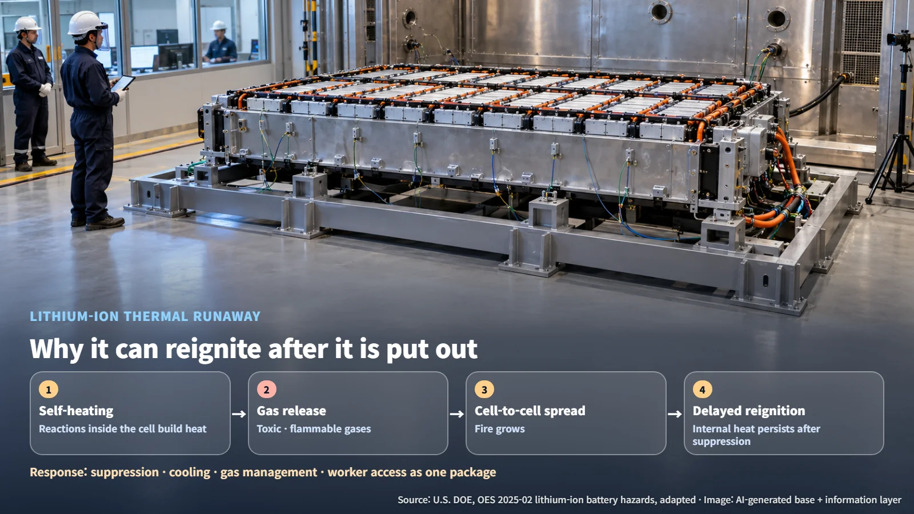
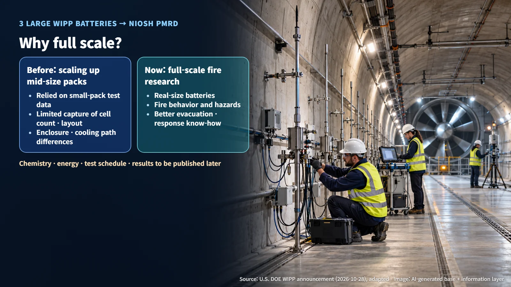
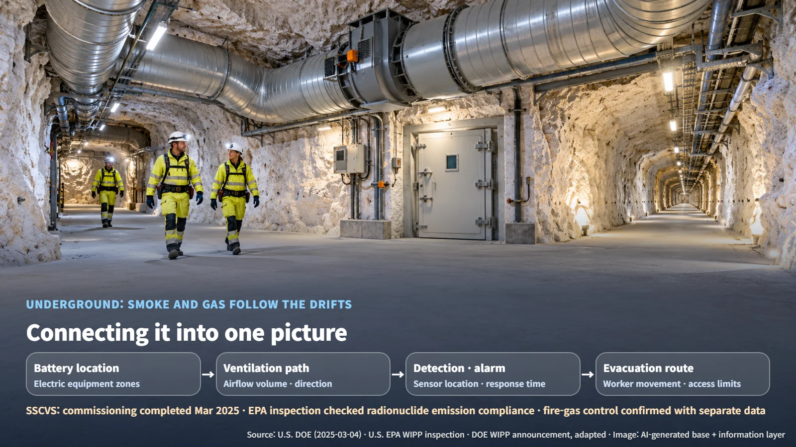

United States · Waste Disposal Safety
When a Large Battery Catches Fire Underground: Why WIPP Is Handing Real Batteries Over for Fire Research
WIPP is providing three large lithium-ion batteries to NIOSH researchers to study how full-size battery fires behave underground.
A radioactive waste repository and a battery fire sound like an unlikely pairing. Yet WIPP, the U.S. underground disposal facility, has just offered large batteries from its own site for fire research. Why would a repository study battery fires, and what can full-scale testing reveal that smaller tests cannot? Let's walk through it step by step.

Batteries in the Repository's Underground, and the New Agreement
WIPP (Waste Isolation Pilot Plant) is a deep geologic disposal facility near Carlsbad, New Mexico, that permanently disposes of defense-related transuranic waste (waste containing elements heavier than uranium). The new research ties directly to the underground environment, where battery-powered electric equipment is in use.
The U.S. Department of Energy (DOE) Carlsbad Field Office and Salado Isolation Mining Contractors (SIMCO), the WIPP management and operating contractor, have signed an interagency agreement with the Pittsburgh Mine Research Division (PMRD) of the National Institute for Occupational Safety and Health (NIOSH). The announcement is dated October 27 and was posted on October 28. Under the agreement, three large platform lithium-ion batteries from WIPP are being provided for the research.
According to the announcement, the results can be used to improve emergency evacuation, response procedures and industrial safety in mines, tunnels, disposal facilities and research facilities. In other words, equipment from a single repository becomes a source of shared safety knowledge for many sites where people work underground.
Thermal Runaway: A Fire That Can Reignite After It Is Put Out
DOE's operating experience summary OES 2025-02 describes thermal runaway as uncontrolled self-heating in an electrochemical system. Put simply, a chain reaction begins inside a battery cell in which heat generates more heat. The progression can be summarized as follows:
1. A single cell begins to heat itself. 2. Toxic and flammable gases are released rapidly. 3. Heat spreads to neighboring cells, and the fire can grow. 4. Even after the visible flames are knocked down, internal heating can continue and cause delayed reignition.
The last step is what sets these fires apart from ordinary ones. A wood fire dies down once its oxygen is cut off, while in thermal runaway the chemical reactions inside the cell keep producing heat. DOE lists several issues for review: thermal runaway can persist after gaseous suppression has controlled combustion, water-based suppression systems may lack sufficient capacity, and toxic gases can limit what operators are able to do. That is why battery fire response treats suppression, cooling, gas management and worker access as a single package.

Why Full-Scale Testing Matters, and What Gets Measured
WIPP explains that earlier research has relied on extrapolating (scaling up results from small tests to larger ones) test results from mid-size battery packs to large batteries. As a battery grows, the number of cells, the cell arrangement, the protective enclosure and the cooling paths all change together. More cells mean more paths for heat to jump to neighboring cells, and the enclosure and cooling design change how heat escapes. Multiplying small-pack results by a scale factor struggles to capture these interactions; full-scale testing fills that gap directly.
Full-scale fire studies generally look at five groups of items:
- Battery configuration: chemistry, energy, state of charge, cell arrangement, enclosure
- Thermal runaway and propagation: temperature of each cell and the time it takes to spread to the next cell
- Heat and gas: heat release rate (how much heat a fire gives off per unit of time), gas types and release history
- Suppression and cooling: agent delivery conditions, temperature drop, whether reignition occurs
- Ventilation and detection: airflow volume and direction, sensor locations and response times
NIOSH's 2019–2024 mining strategic plan also identified heat release rate, combustion gases, suppression methods and risk assessment, ignition pressure in battery enclosures, and ventilation to prevent the spread of smoke and toxic gases as research topics. For this study, the battery chemistry, rated energy and state of charge, the ignition method, the test schedule and acceptance criteria, and the results have not yet been disclosed. The three batteries are the number provided, and the number of repeat tests is separate information still to be published.

Underground Ventilation, Evacuation and the Next Checkpoints
A key difference between fires above ground and below ground is where the smoke and gases go. Above ground, smoke disperses into the sky; underground, it travels along the drifts and ventilation paths. That is why battery location, airflow direction, detector placement and response speed, and worker evacuation routes all connect into one picture.
WIPP has a large ventilation system. In March 2025, DOE announced the completion of commissioning for the Safety Significant Confinement Ventilation System (SSCVS), describing turnover to the operations team and a readiness assessment as the next steps. During a September 2025 site inspection, the U.S. Environmental Protection Agency (EPA) treated the SSCVS as a new point for confirming air-emissions compliance and verified activities for meeting radionuclide emission standards. That inspection covered the management of radioactive emissions; the control of toxic gases, heat and smoke during a battery fire is confirmed separately, through accident conditions and system data. Full-scale test data such as heat release rates and combustion gases can help define the inputs for ventilation and detection models.

There is a regulatory side as well. NFPA 855, cited in DOE's OES, is the design and installation standard for stationary energy storage systems (ESS); the applicable standard for batteries in mobile equipment is confirmed according to how they are installed and used. DOE also explains that safety analyses for Hazard Category 1, 2 and 3 nuclear facilities evaluate normal, abnormal and accident conditions along with energy sources. When batteries are introduced, they are reviewed within this analysis as energy sources that could affect nuclear material and safety functions.
The next things to watch are the publication of the test scale, measurement items, scenarios and results, and how they are reflected in the repository's fire protection and equipment operating procedures. The safety of a facility built to confine radioactive material goes hand in hand with the safety of the people and equipment working underground. Three real batteries are the starting point for filling that link with data.